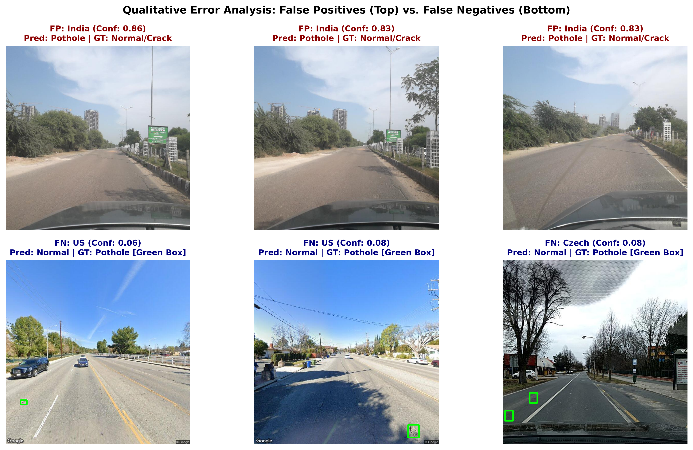

Automated Road Pothole Detection & Infrastructure Auditing
Paras Pandey (IIT2024235) • Chandan Sapkale (IIT2024258) • Neel Ghule (IIT2024266) • Kavyan Hemrom (IIT2024245)
Department of Information Technology, Indian Institute of Information Technology (IIIT) Allahabad
Slide 1: Executive Overview
Multi-National Pothole Detection Benchmark (RDD2022)
Automated evaluation across 15,340 images spanning three continents:
- Czech Republic: 2,829 images (Europe) — 154 pothole images (197 boxes), 918 crack hard negatives.
- India: 7,706 images (Asia) — 1,530 pothole images (3,187 boxes), 1,693 crack hard negatives.
- United States: 4,805 images (North America) — 116 pothole images (135 boxes), 4,689 crack hard negatives.
Strict Constraint: Zero spatial-temporal data leakage via 50-frame sequence partitioning (group_id).
Slide 2: Pipeline Architecture
End-to-End System Workflow
A dual-branch architecture tailored for municipal maintenance fleets:
- Branch 1 (Edge Classification): 10,217-D multi-modal hand-crafted feature fusion (Color, HOG, LBP, GLCM) + standard scaling + classical tuned models (LR, SVM, RF, XGBoost).
- Branch 2 (Severity Auditing): Deep YOLOv8n object detection computing normalized cavity area ratios (PSI) aggregated by street corridor.
Slide 3: Multi-Modal Feature Descriptor
10,217-Dimensional Representation
| Modality | Dimensions | Physical Property Captured |
|---|
| HSV Color Moments & 3D Hist | 4,105 dims | Pavement dampness, asphalt oil sheen, shadow darkness |
| Structural HOG Gradients | 6,084 dims | Closed elliptical rim edges, depression boundary transitions |
| Uniform LBP Texture | 18 dims | Bitumen micro-roughness vs smooth asphalt surface |
| Haralick GLCM Properties | 10 dims | Second-order pixel contrast, energy, homogeneity |
Slide 4: Classical Model Benchmark
Held-out In-Domain Test Results (2,323 Images)
| Model | Accuracy | F1 | PR-AUC | ROC-AUC |
|---|
| Logistic Regression | 84.72% | 0.4741 | 0.4445 | 0.8112 |
| Linear SVM (Hinge) | 86.27% | 0.4354 | 0.3708 | 0.7935 |
| Random Forest | 89.24% | 0.5614 | 0.5768 | 0.8391 |
| XGBoost (Best) | 90.31% | 0.5698 | 0.6218 | 0.8646 |
Slide 5: Loss Curves & Convergence
Empirical Training Convergence across Epochs
XGBoost Log-Loss
Monotonic training log-loss drop; validation log-loss achieves optimal regularization minima at boosting round 75 (0.246).
SGDClassifier Logistic Loss
Converges smoothly from 0.72 to 0.43 across 50 full dataset epochs.
YOLOv8 Per-Epoch Metrics
Box loss converges from 1.786 to 1.429 over 10 epochs (e4_yolo_loss_curves.png).
Slide 6: Feature Ablations
Predictive Contribution per Feature Modality
- Color alone is insufficient: F1 = 0.4851 (confounds oil slicks & harmless tire marks).
- HOG gradients yield largest surge: F1 jumps by +0.0848 to 0.5699.
- LBP + GLCM maximizes PR-AUC: Peak PR-AUC reaches 0.6161.
- PCA 99.37% Compression: 64 components retain 91.1% of maximum F1, enabling ultra-fast edge inference.
Slide 7: Cross-Domain Generalization
Continental Transfer & Domain Collapse
| Scenario | Model | In-Domain F1 | India Target F1 | Drop (ΔF1) |
|---|
| Czech → India | XGBoost | 0.1901 ± 0.04 | 0.0009 ± 0.00 | +0.1892 |
| Czech → India | SVM | 0.1712 ± 0.08 | 0.2494 ± 0.08 | -0.0782 |
| West → India | XGBoost | 0.0831 ± 0.04 | 0.0060 ± 0.00 | +0.0770 |
| US → India | Logistic | 0.0131 ± 0.01 | 0.0877 ± 0.01 | -0.0746 |
Slide 8: Key Defense Question
Why does cross-domain F1 drop?
Core Answer:
"Cross-domain performance collapses because asphalt aggregate pigmentation, road surface textures, lane marking schemes, and roadside shadows undergo severe covariate shift across national networks, causing hand-crafted gradients and tree split thresholds fit on one country's pavement to severely misalign with unseen pavement distress."
- Asphalt Composition: European dark asphalt vs Indian light, coarse gravel with exposed clay.
- Tree Threshold Overfitting: Decision trees create sharp orthogonal feature splits that fail under different ambient lighting and road colors.
- Linear Regularization: Linear SVM hyperplanes degrade more gracefully than non-linear decision trees across continents.
Slide 9: Qualitative Error Analysis
False Positives & False Negatives

- False Positives (Top): Circular manholes, drainage grates, bitumen patches, and sharp tree shadows.
- False Negatives (Bottom): Shallow cavities lacking interior shadow depth, distant defects at the horizon.
Slide 10: Infrastructure Auditing
Road Corridor Severity Prioritization
Spearman Rank Correlation
ρ = 0.4751 (p-value: 2.15 × 10-4, p < 0.001).
Statistically significant monotonic correlation confirms that vehicular predictions reliably sort and prioritize road corridors for municipal resurfacing budgets without manual human bias.